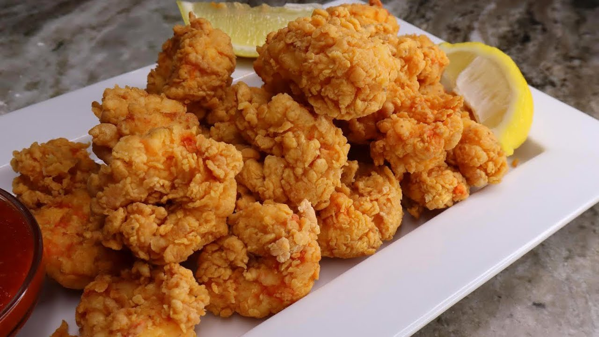

Southern Fried Shrimp

Servings : 4 - 6
Prep time : 20 minutes
Cook time : 5 minutes
Ingredients
- 2 dozen large shrimp, peeled and deveined
- 1/2 teaspoon plus 1 1/2 tablespoon salt
- 1/4 teaspoon plus 1 tablespoon ground black pepper
- 2 cups all-purpose flour
- 2 1/2 teaspoons cayenne pepper
- 1 tablespoon paprika
- Oil for frying
- Peanut oil (Recommended)
- Vegetable Oil
- Canola Oil
- 1 cup well-shaken buttermilk
- (Optional) 2 teaspoons Creole mustard
Instructions
- Place the shrimp in a medium bowl and season with 1/2 teaspoon salt, 1/4 teaspoon black pepper, 1/2 teaspoon cayenne pepper, and 1/2 tablespoon paprika
In a separate bowl, whisk together the flour with the remaining salt, pepper, cayenne pepper, and paprika
- Heat 3 - 4 inches of oil in a large pot until very hot, about 350 degrees
- Pour the buttermilk (and mustard if using) over the seasoned shrimp and combine. Working in batches, use a slotted spoon to remove the shrimp from the buttermilk
and transfer to the seasoned flour. Using a separate dry spoon or your fingers, toss to evenly coat.
- Carefully slip the battered shrimp into the fryer and fry until golden brown and crisp, about 5 minutes
- Use slotted spoon to scoop the finished shrimp out of pot, and drain on paper towels